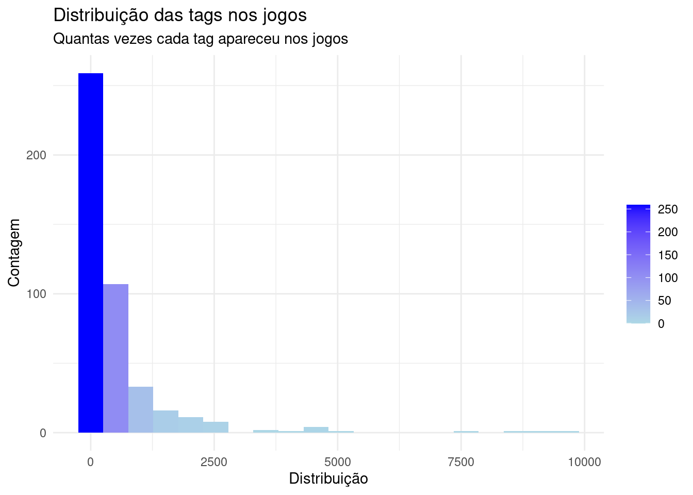

A ideia desta análise é ilustrar os conhecimentos adquiridos em R, começando com uma análise exploratória dos dados e tentando trazer alguns insights relacionados à jogos de sucesso no mercado. Para isso vou passar pelas etapas de elaboração do objetivo, trabalho no tratamento e limpeza dos dados, fazer análises de variáveis de interesse individualmente e depois cruzando algumas delas para tentar traçar algumas conclusões, que, por fim, podem sugerir alguns caminhos para empresas que pretendem lançar seus jogos terem sucesso na Steam.
O objetivo
Somos um estúdio de jogos e queremos analisar:
Qual gênero/categoria de jogo tem mais sucesso na steam, definindo sucesso como melhores avaliações;
Também queremos analisar qual faixa de preço é mais interessante para o lançamento desse novo jogo, como a faixa de preço se relaciona com o número de vendas e com a categoria.
Análise exploratória das bases de dados
Inicialmente irei fazer uma análise exploratória de algumas bases de dados e suas variáveis que podem ser interessantes para determinar sucesso de um jogo, a faixa de preço, a quantidade de vendas e relacionar essas questões aos gêneros e categorias. Foram feitas análises de três bases de dados, a primeira mais completa, e as duas seguintes mais focadas em reviews de usuários. São bases de dadas extraídas do Kaggle que serão utilizadas para o estudo.
Base de dados - 1
Esta base de dados se encontra no Kaggle, através deste link:
Usarei o Skimr para a base de dados completa e verificarei quais dados podem ser melhor investigados. Essa função faz um resumo geral das variáveis e é bem útil para uma primeira visualização.
Código
# ## Dados de conexão com o banco da Steam no mongo# mongolite::mongo_options(log_level = 1)# mongo_db_user <- config::get("mongo_db_user", file = "config/config.yml")# mongo_db_password <- config::get("mongo_db_password", file = "config/config.yml")# mongo_db_url_extra <- config::get("mongo_db_url_extra", file = "config/config.yml")# mongo_database <- config::get("mongo_database", file = "config/config.yml")# mongo_collection <- config::get("mongo_collection_full", file = "config/config.yml")# # url_srv <- paste0("mongodb+srv://", mongo_db_user, ":", mongo_db_password, mongo_db_url_extra)# mongo_db <- mongolite::mongo(collection = mongo_collection, db = mongo_database, url = url_srv, verbose = TRUE)# # ## Lendo e criando um dataframe com os dados do mongoDB# df_base_1 <- as.data.frame(mongo_db$find())df_base_1 <- data.table::fread(here::here("data-raw/steam-data/db-1/games.csv"))
Código
# skimr::skim(df_base_1)
Por sua complexidade e tamanho de análises, para a versão final deste relatório foi optada por não apresentar a saída da função skimr.
Limpezas e padronizações
Para padronizar os nomes das variáveis, será utilizado o pacote janitor, que é bastante útil na hora de limpeza e padronização do banco de dados.
Código
## Usaremos a função do Janitor para editar os nomes das colunas e torná-las mais fáceis de serem manipuladas## E então faremos a seleção das colunas que serão analisadasdf_selected <- df_base_1 |> janitor::clean_names() |> dplyr::select(app_id, name, developers, publishers, categories, genres, tags, release_date, estimated_owners, peak_ccu, price, windows, mac, linux, metacritic_score, user_score, positive, negative, recommendations, average_playtime_forever, median_playtime_forever, average_playtime_two_weeks, median_playtime_two_weeks) |> dplyr::mutate(release_date = lubridate::mdy(release_date))
Removendo Softwares e não jogos
Após a análise inicial, foi detectado que existiam nesta base de dados softwares que não eram considerados jogos, portanto eles serão excluídos para que não comprometam as futuras análises.
Vamos utilizar a variável genres e tags para identificar os gêneros que não são jogos.
E então, análisando as tabelas geradas pelo skimr, selecionei algumas variáveis que seriam analisadas mais profundamente. A começar pelas variáveis relativas a notas, críticas e avaliações dos jogos.
Pelo Histograma pude ver que a variável Metacritic Score (renomeada para metacritic_score) não é muito interessante, seu preenchimento foi visto como completo pelo skim, porém quase em sua totalidade as notas são “0”, ou seja, não temos uma nota definida para avaliar os jogos.
Outras variáveis de avaliação como Reviews, User Score, e Recommendations, foram analisadas porém apresentaram pouco úteis, ou por terem um preenchimento muito baixo ou por envolverem outros tipos de dados (que não fossem uma avaliação direta).
Nova métrica de avaliações
As únicas métricas de avaliação nesta base que parecem interessantes, são as de avaliações positivas e negativas (as variáveis Positive e Negative).
Por isso, decidi criar uma nova variável, que mede a taxa de avaliações positivas e negativas de um jogo, chamada overall_rate.
[1] 35.29412 91.37931 NaN 100.00000 86.20690 63.97059 75.00000
[8] NaN 92.68293 83.33333 73.53308 71.70732 100.00000 76.59574
[15] 95.23810 72.25673 100.00000 NaN 75.00000 67.77778 50.87719
[22] 78.50369 28.57143 87.30512 62.71186 26.47059 90.47619 82.75862
[29] NaN 56.09756 66.66667 61.53846 60.84906 100.00000 77.77778
[36] 66.66667 70.54291 81.15942 37.67123 73.20819 NaN 77.46948
[43] 62.16216 50.00000 79.91676 40.00000 56.60377 87.50000 100.00000
[50] NaN NaN 50.00000 85.71429 80.23256 89.03251 10.52632
[57] 60.00000 100.00000 0.00000 75.46667 77.77778 56.45439 100.00000
[64] 89.52023 100.00000 100.00000 86.95652 NaN 96.96845 NaN
[71] 89.47368 100.00000 77.77778 40.00000 NaN 70.45455 NaN
[78] 100.00000 27.77778 0.00000 83.33333 83.33333 100.00000 33.33333
[85] 90.32258 76.11940 67.86885 100.00000 NaN 83.01887 89.70434
[92] 76.08696 NaN 96.49192 50.00000 100.00000 77.77778 100.00000
[99] 75.92593 91.13924
Analisando uma parte da base de dados com essa nova métrica, verifiquei que a tabela possuía dados NaN e valores de 100, respectivamente, resultados de de divisões \(0/0\) e de jogos sem avaliação negativa. Os números NaN serão removidos, já que não serão úteis para avaliação dos jogos, os números 100 serão investigados mais a fundo.
Filtrando dados inválidos
Após as remoções anteriores, também achei pertinente fazer mais algumas filtragens na base de dados.
Os filtros foram definidos para que tenhamos uma base mais confiável. As regras para que um jogo se mantivesse na base são:
O jogo precisa ter pelo menos 20 avaliações positivas.
O jogo precisa ter pelo menos uma avaliação negativa (para que a avaliação não seja 100% positiva).
O jogo precisa ter pelo menos 50 mil usuários no caso de ser gratuito, e pelo menos 20 mil usuários para jogos pagos.
Deduplicação
Depois da análise do novo banco de dados filtrado, descobri mais um problema que precisava ser tratado, dados duplicados. Verificando pelo nome dos jogos, encontrei jogos duplicados, mas que possuíam IDs, avaliações e às vezes preços diferentes. Olhando com mais cuidado pelo próprio site da Steam e pelo site SteamDB (SteamDB), concluí que se tratavam de dados referentes à novas versões (jogo do ano, versão de luxo, etc), jogos que possuíam versões diferentes de modo Singleplayer e Multiplayer (como por exemplo nos jogos da série “Call of Duty”) e mini-expansões, pacotes de skins (aparências para armas e personagens), pacotes de itens pagos como benefícios no jogos, etc. Portanto, decidi remover essas duplicatas, e usarei como base dados de número de usuários (o jogo base muito provavelmente vai ter mais usuários) e número de jogadores.
Então esta nova regra criada respeitará primeiro o número de jogadores, o jogo que possuir mais jogadores permanecerá na base, e segundo, em caso de empate no número de jogadores, será mantido o jogo com melhor avaliação.
Finalizando limpeza e transformação
E então, finalizando as filtragens, limpezas e transformações, tenho por fim uma base mais confiável para as análises que virão.
Base de dados - 2
Fonte
Esta base de dados se encontra no Kaggle, através deste link:
Como os dados de avaliações na primeira base eram escassos e eu já havia encontrado outras bases de dados nas buscas que fiz, decidi analisar outras bases e verificar se alguma outra teria informações mais úteis com propósito de verificar dados de avaliação dos jogos.
Porém, investigando a base, notei que ela era um pouco antiga, por não possuir títulos como o “Counter-Strike: Global Offensive”, os jogos mais novos da série “Battlefield”, entre outros, o que seria um problema para traçarmos conclusões no mercado atual.
Excluíndo a base
E então, após contatar os problemas citados, decidi não utilizar esta base para a análise.
Base de dados - 3
Esta base de dados se encontra no Kaggle, através deste link:
Na análise inicial desta nova bases, concluí que ela possuía dados atualizados dos jogos, mas possui menos dados que a primeira base analisada. Não temos informações de línguas suportadas (tanto legendas quanto áudios), dados de pico de usuários, dados de DLC, dados de empresas (como sites, e-mail de suporte, imagem do jogo), dados do Metacritic e dados de tempo de jogo. Então utilizarei ela apenas para verificar a avaliação dos usuários (através das colunas positive_ratio e user_reviews).
Filtrando dados inválidos
Aplicando novamente os filtros utilizados para as bases anteriores, mas adaptando para as colunas desta nova base. Agora, utilizarei a variável positive_ratio para filtrar as avaliações positivas e user_reviews para o número de reviews. Os primeiros filtros definidos foram:
O jogo precisa ter pelo menos 20 avaliações positivas.
O jogo precisa ter pelo menos uma avaliação negativa (para que a avaliação não seja de 100%).
O jogo precisa ter pelo menos 50 mil usuários no caso de ser gratuito, e pelo menos 20 mil usuários para jogos pagos.
E para o terceiro filtro, a ideia seria fazer uma contagem através da tabela de reviews para verificar a quantidade do número de usuários por jogo. Que é a única tabela que possui os IDs de jogos e jogadores numa única tabela.
Porém, ao contar quantos jogos distintos haviam na tabela de reviews, tivemos o número de apenas 1900, ou seja, na base temos poucas informações sobre a quantidade de usuários segundo a tabela de reviews, portanto este terceiro filtro não será aplicado.
Deduplicação
O mesmo processo de deduplicação precisou ser feito na nova base.
Porém, ao contrário da base anterior, neste caso todos os jogos “duplicados” se tratavam de jogos diferentes, com diferentes avaliações, diferentes empresas e diferentes IDs, mas que possuíam o mesmo nome, portanto nenhum deles foi removido.
Adicionando coluna de tags através de outra base (também da base 3)
O próximo passo, após a verificação inicial da base 3, seria adicionar informações relacionadas às classificações dos jogos, nesse caso chamadas de “tags”. Esse processo envolveu ler uma segunda base de dados (ainda presente no mesmo grupo dos dados disponibilizados) que possuía as informações de metadados dos jogos. E então houve um processo de readequação, já que esta tabela em específico veio no formato json.
Código
out <-lapply(readLines(here::here("data-raw/steam-data/db-3/games_metadata.json")), fromJSON)## Unindo o terceiro elemento da listafor(i in1:length(out)){ purrr::pluck(out, i, 3)<-paste0(purrr::pluck(out, i, 3), collapse =",")}## Transformando em um dataframe para unir à outra basedf_metadata <-do.call(rbind.data.frame, out)## Adicionando coluna de tags do df_metadata, e adicionando colunas de categoria, genero e tags extra do df anteriordf_base_3_complete <- dplyr::left_join(df_base_3, df_metadata, by ="app_id") |> dplyr::select(-description)
Removendo não jogos
Após a junção a nterior, também removi as observações que se enquadravam nas categorias que definimos como não jogos.
E então, finalizando as filtragens, limpezas e transformações, tenho por fim a segunda base que utilizarei para as análises.
Diferenças entre base 1 e 3
Depois da seleção e limpeza das duas tabelas relacionadas a informações de jogos, decidi investigar as diferenças entre as bases de dados, para tentar entender qual seria o processo de ajuste necessário para a união delas.
Usei o anti_join como método para avaliar os jogos que estávam apenas em uma das bases e não na outra. Percebi que a base 1 excluíu muitos jogos devido aos filtros aplicados, principalmente os filtros relacionados a avaliações positivas e número de jogadores. Investigando os mesmos jogos na Base 3, que não possui informações do número de jogadores, cheguei à números bem mais altos de avaliação, e levando em conta o conhecimento prévio sobre esses jogos, interpretei como uma certa inconsistência nos dados da base 1.
Código
# ## Base 1# df_selected_gen <- data.table::fread(here::here("data-raw/created-tables/db-games-1.csv"))# ## Base 3# df_games_selTags <- data.table::fread(here::here("data-raw/created-tables/db-games-3.csv"))# Antijoins através do ID, analisando diferenças entre bases## Verificando jogos que estão na base 1 mas não na base 3, base "raw"games_antijoin_base_1_ext <- dplyr::anti_join(df_selected[, c("app_id", "name", "positive", "release_date")], df_base_3[, c("app_id", "title")],by ="app_id")## Verificando jogos que estão na base 3 mas não na base 1, base "raw"games_antijoin_base_3_ext <- dplyr::anti_join(df_base_3[, c("app_id", "title", "user_reviews")], df_selected[, c("app_id", "name", "positive", "release_date")],by ="app_id")# Verificando jogos após filtragem de bases## Verificando jogos que estão na base 1 mas não na base 3, base processadagames_antijoin_base_1_filt <- dplyr::anti_join(df_selected_gen[, c("app_id", "name", "positive", "release_date")], df_games_selTags[, c("app_id", "title")],by ="app_id")## Verificando jogos que estão na base 3 mas não na base 1, base processadagames_antijoin_base_3_filt <- dplyr::anti_join(df_games_selTags[, c("app_id", "title", "user_reviews", "date_release")], df_selected_gen[, c("app_id", "name")],by ="app_id")# ## Antijoin após remover os IDs não encontrados, utilizando o nome dos jogos# games_antijoin_games_name <- dplyr::anti_join(df_games[, c("app_id", "title", "user_reviews", "date_release")], df_selected_gen[, c("app_id", "name")], by = c("title" = "name"))# # ## Verificando os jogos que foram excluídos pelo ID mas possuíam nomes iguais# games_antijoin_games <- dplyr::anti_join(games_antijoin_games_app_id, games_antijoin_games_name)# # games_antijoin_sel_name <- dplyr::anti_join(games_antijoin_sel_app_id, df_games[, c("app_id", "title")], by = c("name" = "title"))# # ## Verificando os jogos que foram excluídos pelo ID mas possuíam nomes iguais# games_antijoin_sel <- dplyr::anti_join(games_antijoin_sel_app_id, games_antijoin_sel_name)df_games <- df_games |> dplyr::rename(name = title)games_fulljoin <- dplyr::full_join(df_games_selTags[, c("app_id", "title", "user_reviews", "date_release")], df_selected_gen[, c("app_id", "name", "release_date")], by ="app_id")games_fulljoin <- dplyr::full_join(df_games_selTags, df_selected_gen, by ="app_id") |> dplyr::select(app_id, name_games = name, rating, positive_ratio, user_reviews, name_sel = name, overall, positive, negative, recommendations, date_release, release_date)
Unindo as bases
Como comentado das discrepâncias entre as bases de dados, eu considerei algumas faltas de avaliações/jogadores como inconsistentes na base 1, e assim decidi utilizar a base 3 com a adição dos jogos não presentes nela, que estão presentes na base 1.
Código
## Base 1df_selected_gen <- data.table::fread(here::here("data-raw/created-tables/db-games-1.csv"))## Base 3df_games_selTags <- data.table::fread(here::here("data-raw/created-tables/db-games-3.csv"))## Jogos presentes na base 1 que não estão na base 3df_antijoin_games <- dplyr::anti_join(df_selected_gen, df_games_selTags, by ="app_id") |> dplyr::mutate(rating =0, price_final =0, price_original =0, discount =0, steam_deck = F, db1 = T, release_date = lubridate::ymd(release_date)) |> dplyr::mutate(user_reviews = positive+negative) |> dplyr::select(app_id, title = name, date_release = release_date, win = windows, mac, linux, rating,positive_ratio = overall, user_reviews, price_final = price, price_original, discount, steam_deck, db1)## Jogos da base 3df_games_selTags <- df_games_selTags |>dplyr::mutate(db1 = F, date_release = lubridate::ymd(date_release)) |> dplyr::select(-tags)# colnames(df_games_selTags)# colnames(df_antijoin_games)## Unindo base 3 e jogos da base 1 não presentes na base 3df_all_games <-rbind(df_games_selTags, df_antijoin_games, fill = T)
Também foi analisado novamente as duplicatas que foram geradas, e novamente foi decidido mantê-lás, já que representavam, ou jogos que possuíam o mesmo nome, mas são jogos diferentes, ou são diferentes versões dos jogos (versão normal e versão “game of the year” ou um relançamento por exemplo).
Adicionando informações
Agora adicionaremos à base agrupada os dados referentes às informações do jogo, inicialmente adicionando através de outro arquivo presente nos arquivos da base 3.
Código
run_join <- Tif(run_join){# library(jsonlite) out <-lapply(readLines(here::here("data-raw/steam-data/db-3/games_metadata.json")), fromJSON)## Unindo o terceiro elemento da listafor(i in1:length(out)){ purrr::pluck(out, i, 3)<-paste0(purrr::pluck(out, i, 3), collapse =",") }## Transformando em um dataframe para unir à outra base df_metadata <-do.call(rbind.data.frame, out)## Adicionando coluna de tags do df_metadata, e adicionando colunas de categoria, genero e tags extra do df anterior df_all_games <- dplyr::left_join(df_all_games, df_metadata, by ="app_id") |> dplyr::select(-description) |> dplyr::left_join(df_selected_gen |> dplyr::select(app_id, categories, genres, tags) |> dplyr::rename(tags_extra = tags),by ="app_id")## Escrevendo nova base para não precisar rodar os joins e comparações todas as vezesif(!dir.exists("data-raw/created-tables/")){dir.create("data-raw/created-tables/") }if(params$overwrite_tables =="T"){ data.table::fwrite(df_all_games, here::here("data-raw/created-tables/db-reviews-join.csv")) }}else{ df_all_games <- data.table::fread(here::here("data-raw/created-tables/db-reviews-join.csv")) |> dplyr::mutate(categories =ifelse(categories =="", NA, categories),genres =ifelse(genres =="", NA, genres),tags =ifelse(tags =="", NA, tags),tags_extra =ifelse(tags_extra =="", NA, tags_extra))}
Analisando dados
Agora que já uni as duas bases, e tenho uma quantidade mais razoável de jogos a serem analisados, precisarei definir qual será a forma de avaliar os estilos/gêneros/categorias dos jogos, por ser uma coluna presente em ambas as bases, a variável tags é uma ótima candidata, porém ela apresenta um número de possibilidades bastante grande e distinta, o que poderia ser prejudicial à análise. Já as outras variáveis categories e genres que são mais específicas, não estão presentes em boa parte dos dados. A análise será feita inicialmente nas três para posterior decisão de qual ou quais usar.
Ou seja, na base de dados aproximadamente 60% das linhas não tem informação de categorias, a variável poderia ser utilizada, porém com algumas ressalvas.
E, para efeito de comparação, podemos ver que os valores sem categorias e gênero tem o mesmo percentual (59%), o que faz bastante sentido já essas informações faltantes vem da primeira base que não possuía essas colunas, os valores que temos, os 40%, são dos jogos adicionados pela base 1.
Já no caso das tags, 100% das observações possuem alguma informação nas variáveis tags ou tags_extra (o que também faz sentido, já que unimos duas bases diferentes e uma delas possuia a coluna tags e a outra tags_extra).
Portanto, farei uma análise mais aprofundada desta variável para gerar uma única coluna que possa ser analisada.
Como uni duas bases de dados, precisamos tratar e unificar a nossa coluna que será definida como classificadora dos jogos. A base 1 possuía dados nas colunas genres, categories e tags, já a base 3 apenas em tags.
A coluna que se adequava melhor aos objetivos no caso da base 1, era a variável tags, já que possuía mais classificações para os jogos que a variável genres, normalmente possuindo tudo que estava presente nela e mais algumas outras características. E a variável Categories estava mais associada ao modo de jogo e informações da Steam, como se possuía Achievements, conquistas nos jogos, se tinha suporte a controle pela Steam, etc.
Como alguns jogos estavam em ambas as bases de dados, por fim acabei ficando com duas colunas de classificação, e para não perder nenhuma classificação, achei interessante comparar as características e adicionar as faltantes, fazendo uma união de tudo que aparecia em ambas as variáveis.
Separação de tags
Código
teste_interno <- Tif(teste_interno){df_all_games <- data.table::fread(here::here("data-raw/created-tables/db-reviews-join.csv")) |> dplyr::mutate(tags =ifelse(tags =="", NA, tags),categories =ifelse(categories =="", NA, categories),genres =ifelse(genres =="", NA, genres),tags_extra =ifelse(tags_extra =="", NA, tags_extra))}## Verificando as diferenças entre tags de um df e do outro (tags e tags_extra)df_tags <- dplyr::select(df_all_games, app_id, title, tags, tags_extra) |> dplyr::filter(!is.na(tags) |!is.na(tags_extra))df_tags_equal <- df_tags[tags == tags_extra,]df_tags_not_equal <- df_tags[tags != tags_extra,]## Primeiro check será em jogos que possuem números de tags diferentestags_dif_ids <- df_tags_not_equal |> dplyr::select(app_id, tags, tags_extra) |> dplyr::mutate(check_lenght =ifelse(stringr::str_length(tags) == stringr::str_length(tags_extra), T, F))
Analisando tags diferentes
Então, será criado uma nova coluna para as tags diferentes. É feita uma comparação, entre as duas colunas, e é mantido em um vetor o que temos de elementos iguais (equal), depois em outro vetor o que temos a mais em uma coluna (diff1) e no terceiro o que temos a mais na outra coluna (diff2).
Depois transformei novamente estes vetores em colunas para poder inspecionar como ficaram as novas colunas. E nesse momento verifiquei que por serem bases diferentes, em alguns casos existiam pequenas variações no nome da classificação, que foram ajustados para que não influênciassem na contagem final. Um exemplo destes casos era a categorização “Rogue like”, que em uma base estava definida como “Rogue like” e na outra “Rogue-like”, isso e mais algumas outras categorizações foram normalizadas.
Código
### XXXXXXXXXXXXXXXXXXXXXXXXXXXXXXXXXXXXXXXXXXXXXXXXXXXXXXXXXXXXXXXXXXXXX ####### ALTERAR TAGS ALL, usar tidyr e dplyr (consultar fct_ajustando_tags)### não é possível de forma tão simples, talvez usando trible? (lista dentro do df)### Gerar uma lista com os elementos e fazer um "union" entre elas e um "intersect"### XXXXXXXXXXXXXXXXXXXXXXXXXXXXXXXXXXXXXXXXXXXXXXXXXXXXXXXXXXXXXXXXXXXXX ####vector_tags <- df_tags_not_equal$tags |> purrr::map(\(x) stringr::str_sort(stringr::str_split_1(x, pattern =",")))vector_tags_ex <- df_tags_not_equal$tags_extra |> purrr::map(\(x) stringr::str_sort(stringr::str_split_1(x, pattern =",")))# vector_tags_aux <- vector_tags[1:5]# vector_tags_ex_aux <- vector_tags_ex[1:5]## Criando uma lista com todas as tags q estão presentes em uma coluna e não na outra ## (estão em tags e não estão em tags_extra, estão em tags_extra e não estão em tags)diff_elem <-NULLfor(i in1:length(vector_tags)){ elem_1 <-pluck(vector_tags, i) elem_2 <-pluck(vector_tags_ex, i) diff1 <-setdiff(elem_1, elem_2) diff2 <-setdiff(elem_2, elem_1) equal <-intersect(elem_1, elem_2)pluck(diff_elem, i, 1) <-paste0(equal, collapse =",")pluck(diff_elem, i, 2) <-paste0("1 - ", paste0(diff1, collapse =","), ". 2 - ", paste0(diff2, collapse =","))pluck(diff_elem, i, 3) <-pluck(df_tags_not_equal, 1, i)}## Alterando para DF, para melhor visualizaçãodf_diff <-data.frame(t(sapply(diff_elem, c)))colnames(df_diff) <-c("equal", "diff", "id")df_diff <- df_diff |> tidyr::separate_wider_delim(diff, ". 2", names =c("first", "seccond")) |> dplyr::mutate(seccond =paste0("2", seccond)) |> dplyr::mutate(equal =as.character(equal),id =as.integer(id))## Investigando tags com mesmo tamanho, buscando pequenas alterações na escritadf_diff_ <- df_diff |> dplyr::filter(!(first =="1 - ") &!(seccond =="2 - ")) |> dplyr::filter(stringr::str_length(first) == stringr::str_length(seccond))## Palavras com grafias levemente diferentes serão alteradas## Roguelike e Roguelite para Rogue-like e Rogue-lite,## Base Building para Base-Building## e-sports para eSports## Football (Soccer) para Soccer## Football (American) para Football## Puzzle Platformer para Puzzle-Platformerdf_diff <-func_ajustando_tags(df_diff, debug)df_diff <- df_diff |> dplyr::select(id, tags)
Tags NA
Após a separação e tratamento de ambas os conjuntos de dados, observei um número grande de dados que não havia sido incluído em nenhuma base, nem no que possuía as tags iguais nem nos que possuíam as tags diferentes. Descobri que isso foi causado pela forma como o R trata NA, as colunas que possuem NA não são comparadas diretamente, então elas ficaram excluídas da junção anterior. Portanto, tratei de forma que também adicionasse estes casos de forma simples, copiando os dados de uma coluna à outra, para tratar de forma similar à que seria tratado o conjunto de dados que possuía as colunas iguais.
Código
## Como ainda possuíamos um número grande de NAs em uma das duas colunas, a solução foi copiar## a coluna preenchida e tratar como se fosse uma junção que não precisaria de tratamento## Tags e Tags_extra NAdf_tags_na_1 <- df_tags[is.na(tags)]## Clonando a coluna de tags para que seja tratada da mesma forma para o df com tags iguaisdf_tags_na_1$tags <- df_tags_na_1$tags_extradf_tags_na_3 <- df_tags[is.na(tags_extra)]## Clonando a coluna de tags para que seja tratada da mesma forma para o df com tags iguaisdf_tags_na_3$tags_extra <- df_tags_na_3$tagsdf_tags_equal <-rbind(df_tags_equal, df_tags_na_1, df_tags_na_3)
Visualzando tags mais frequentes
Após a organização e limpeza das tags, vou começar com uma visualização simples para identificar as tags mais utilizadas (e as menos utilizadas). Outro detalhe é que farei uma junção, agora da tabela com as tags diferentes e com as que defini como tags iguais.
Código
df_tags_all <- df_tags_equal |> dplyr::select(app_id, tags) |>rbind(df_diff |> dplyr::rename(app_id = id))all_ordered <- df_tags_all$tags |> purrr::map(\(x) stringr::str_sort(stringr::str_split_1(x, pattern =",")))## Colocando tudo numa única lista para contagemall_string_listwise <-tolower(unlist(lapply(all_ordered, unique)))## Fazendo a contagem e transformando em um dataframe, podemos verifiicar diretamente na tabeladf_tags_count <-as.data.frame(table(all_string_listwise), stringsAsFactors = F)## Renomeando colunasnames(df_tags_count) <-c("tag", "count")## Escrevendo base de dadosif(params$overwrite_tables =="T"){ data.table::fwrite(df_tags_count, here::here("data-raw/created-tables/df-tags-count.csv"))}## Utilllizamos as 50 tags que mais aparecem e criamos uma nova tabela para visualizaçãodf_tags_count |> dplyr::arrange(desc(count)) |> dplyr::slice_head(n =10) |> gt::gt()
tag
count
singleplayer
9632
indie
9323
action
8605
adventure
7752
casual
5281
strategy
4669
simulation
4649
rpg
4623
multiplayer
4554
2d
4035
Organizando nova tabela
E então, para finalizar a organização das tags, nós vamos excluir as características dos jogos que vieram de ambas as bases, e vamos adicionar essa nova coluna tratada.
Código
df_all_games_new_tags <- df_all_games |> dplyr::select(-tags, -tags_extra) |> dplyr::inner_join(df_tags_all, by ="app_id") |> dplyr::rename(tags_all = tags)## Escrevendo base de dadosif(params$overwrite_tables){ data.table::fwrite(df_all_games_new_tags, here::here("data-raw/created-tables/db-all-games-tags-all.csv"))}
Criando base no formato long
Para futuras comparações, decidi criar dois tipos de bases de dados, uma no formato long, com cada linha possuindo uma única tag, e outra com todas as tags agrupadas em uma única coluna, unida por vírgula.
Código
## dataframe filtrando generos e tags que não são considerados jogosdf_all_games_split <- df_all_games_new_tags |> dplyr::filter(title !="Houdini Indie") |> tidyr::separate_longer_delim(tags_all, delim =",") |> dplyr::rowwise()## Escrevendo base de dadosif(params$overwrite_tables){ data.table::fwrite(df_all_games_split, here::here("data-raw/created-tables/db-all-games-tags-all-split.csv"))}df_all_games_filt <- df_all_games_split |> dplyr::group_by(app_id) |> dplyr::mutate(tags_all_ =paste0(tags_all, collapse =",")) |> dplyr::distinct(app_id, .keep_all = T) |> dplyr::select(-tags_all) |> dplyr::rename(tags_all = tags_all_) |> dplyr::ungroup()all.equal(df_all_games_new_tags, df_all_games_filt)
Vou agora me debruçar sobre as faixas de preços e em seguida farei um cruzamento dos dados de preços e tags.
Utilizarei a base criada anteriormente, com a coluna de característica dos jogos ajustada (tags). E farei uma tabela com as informações descritivas relacionadas ao preço, para essa análise irei excluir os jogos gratuitos, para que não influêncie tanto nas métricas.
Código
## Usado para escrever o qmd, porém não preciso utilizar ao rodar a análise completa (outro qmd já fará a leitura desse arquivo)df_all_games <- data.table::fread(here::here("data-raw/created-tables/db-all-games-tags-all.csv"))# ## Base 1# df_base_1 <- data.table::fread(here::here("data-raw/created-tables/db-games-1.csv"))# ## Base 3# df_base_3 <- data.table::fread(here::here("data-raw/created-tables/db-games-3.csv"))## Selecionando apenas colunas utilizadasdf_payed_games <- df_all_games |> dplyr::filter(price_final >0& price_original >0)## Verificando quartisquant_games <-quantile(df_payed_games$price_original, probs =c(0, 0.25, 0.5, 0.75, 1))df_med_games <-data.frame(`Métrica`=character(),`Valores`=character())# summary(df_payed_games$price_original)df_med_games[nrow(df_med_games)+1, ] =c("Mínimo", round(quant_games[1], 2))df_med_games[nrow(df_med_games)+1, ] =c("1° Quartil", round(quant_games[2], 2))df_med_games[nrow(df_med_games)+1, ] =c("Mediana", round(quant_games[3], 2))df_med_games[nrow(df_med_games)+1, ] =c("3° Quartil", round(quant_games[4], 2))df_med_games[nrow(df_med_games)+1, ] =c("Máximo", round(quant_games[5], 2))df_med_games |> gt::gt()
As medidas de tendência central apontam para faixas de preço dos jogos pagos relativamente baixa, apesar de termos jogos mais caros (com o máximo sendo de $110). Vamos analisar com mais cautela as categorias de preços dos jogos, já que será uma das bases de decisão na escolha do tipo de jogo a ser lançado.
Também nos decis comparei a faixa de preço do jogo lançado, que será utilizada para as visualizações e análises, com a faixa de preço atual. Em geral vi uma variação para baixo nos decis quando comparamos o preço de lançamento e o preço atual, indicando que os jogos tendem a cair de preço com o tempo, o que é visto com frequência para quem acompanha os preços da Steam, quando os jogos começam a ficar mais velhos, é comum existirem cortes de preços e promoções para tentar aumentar o número de vendas.
Visualizações das faixas de preço
Vou utilizar um gráfico para ilustrar as diferentes faixas de preços dos jogos. Para isto, escolhi um boxplot que apresenta algumas informações interessantes.
Código
ggplot(df_payed_games, aes(y = price_original)) +geom_boxplot() +theme_minimal() +xlim(-2, 2) +labs(title ="Distribuição dos preços de jogos",subtitle ="Preço em dólares",alt ="Gráfico de distribuição do preço dos jogos em dólares",x ="",y ="") +theme(axis.text.x=element_blank(),axis.ticks.x=element_blank())
E aqui podemos ver que ele classificou muitos jogos como outliers, em faixas superiores à $45, portanto resolvi tirar os jogos do primeiro e último decis, de acordo com seu preço. Depois de remover os 10% inferiores e superiores:
Código
ggplot(df_payed_games[(df_payed_games$price_original > dec_orig[1] & df_payed_games$price_original < dec_orig[10]),], aes(y = price_original)) +geom_boxplot() +theme_minimal() +xlim(-2, 2) +labs(title ="Distribuição dos preços de jogos",subtitle ="Preço em dólares",alt ="Gráfico de distribuição do preço dos jogos em dólares",x ="",y ="") +theme(axis.text.x=element_blank(),axis.ticks.x=element_blank()) +scale_y_continuous(breaks=seq(0, 30, 5))
Observei então uma distribuição com menos valores discrepantes, tendo sua mediana em torno dos $12, mínimo próximo de zero e máximo próximo de $30, com 1° quartil em $5 e 3° quartil em $15.
Investigando a hipótese da possibilidade de descartar estes jogos para a análise, inicialmente eu defendo a exclusão dos mais caros, pois costumeiramente são os jogos mais famosos e conhecidos, que já tem seu público definido e podem se dar ao luxo de cobrar mais caro. Já os jogos mais baratos, imagino que sejam jogos menores e que não se encaixam na nossa proposta de um jogo que fosse lucrativo, muitas vezes também são jogos mais antigos que foram tendo cortes de preços para continuarem vendendo. De qualquer forma, investigaremos nos dados ambas as hipóteses.
Verifiquei muitos jogos considerados “AAA”, jogos de grandes editoras e publicadoras, como The Witcher 3, Cyberpunk 2077, Red Dead Redemption 2, e alguns um pouco menores mas que fizeram bastante sucesso como Rust, DayZ, Deep Rock Galactica. Com preços variando de $29.99 até $109.99. Citando como exemplo de jogos mais caro em seu preço original o TEKKEN 7, lançado em 2017 e com preço de lançamento de $109.99, interessante de se notar que o preço atual (em maio/2023) do jogo é de $16.49.
Já na análise dos preços mais baratos, verifiquei que os jogos que possuem mais reviews na categoria dos mais baratos, são os jogos gratuitos, porém são jogos que possuem uma estratégia diferente, e que tem crescido bastante em popularidade, os jogos gratuitos com microtransações. Jogos que costumam fazer receita através da venda de itens cosméticos dentro do próprio jogo, ou algum sistema de assinatura que garanta benefícios (cosméticos ou facilitação para o jogador).
Evolução de preços
Outra coisa interessante que notei, é que os jogos mais antigos eram lançados por preços mais baixos, parece ter havido um aumento de preço médio dos jogos, o que pode explicar em partes a quantidade de jogos nas faixas mais baratas. Para isso, vamos tentar observar a variação de preço ao longo dos anos, com o intuito de entender as faixas de preços atuais e definir a melhor faixa de preço para o lançamento de um jogo.
Código
## Excluindo jogos gratuitosdf_all_games_notFree <- df_all_games |> dplyr::filter(price_original >0& price_final >0)df_all_games_year <- df_all_games_notFree |> dplyr::mutate(year_release = lubridate::year(date_release)) |> dplyr::filter(year_release >2006) |> dplyr::group_by(year_release) |> dplyr::summarise(mean_price =mean(price_original), median_price =median(price_original), .groups ="drop")ggplot(df_all_games_year, aes(x = year_release, y = median_price)) +geom_line() +theme_minimal() +labs(title ="Evolução da mediana dos preços ao longo dos anos",subtitle ="Preços",x ="",y ="") +scale_y_continuous(breaks =c(7.99, 9.99, 12.99, 14.99)) +scale_x_continuous(breaks =c(seq(2007, 2023, 2))) +theme(panel.grid.major =element_blank(),panel.grid.minor =element_blank(),plot.subtitle =element_text(hjust =-0.08))
Apesar de já ter verificado um aumento na mediana e na média de preços, por ter acompanhado esse mercado por alguns anos tive a impressão de que o resultado não refletia exatamente os aumentos observados por mim, então decidi me debruçar mais sobre alguns exemplos de jogos considerados “triple A”.
Seguindo alguns exemplos de jogos que são grandes franquias e são lançados quase que anualmente, pude observar bem esta tendência de aumento no preço. Vamos usar como exemplo os jogos Assassin’s Creed, Battlefield, Call Of Duty, Far Cry, Final Fantasy, NieR que são franquias já muito conhecidas e que estiveram em alguns períodos no catálogo da Steam (alguns dos jogos não estão presentes de forma integral por figurarem apenas em lojas próprias das empresas). Removi os Remasters nos jogos que possuíam, que são jogos que são relançados geralmente com pequenas alterações gráficas e acabam tendo preço mais baixo, por ser um jogo mais antigo e no caso do Final Fantasy, como existem muitos jogos menores sendo relançados, mantive apenas o preço mais alto do ano. As franquias Battlefield e Call Of Duty também tiveram que ser corrigida em seus anos de lançamento, pois muitos jogos foram adicionados com sua data de lançamento incorreta.
Confirmei então essa tendência de aumento, mesmo que em alguns casos não seja uma tendência clara, em geral os preços dos jogosconsiderados “AAA”subiram desde os $19.99 nos anos de 2010 até os $59.99 e até $69.99 em alguns casos até o ano de 2022.
Investigando jogos bem avaliados
Mais avaliações positivas
Primeiramente vou analisar os jogos que tem mais avaliações positivas, decidi utilizar os 100 jogos mais bem avaliados da base para tentar trazer algum insight. Além disso, faremos um filtro de ano, para que tenhamos jogos mais atuais.
Para isso, defini alguns filtros para os jogos:
Ter sido lançados de 2019 até os dias de hoje, para que tenhamos um mercado observado mais próximo dos dias atuais.
Possuírem pelo menos 50000 avaliações.
Código
## Usado para escrever o qmd, porém não preciso utilizar ao rodar a análise completa (outro qmd já fará a leitura desse arquivo)df_all_games <- data.table::fread(here::here("data-raw/created-tables/db-all-games-tags-all.csv"))df_more_reviewed <-func_add_price_categ(df_all_games, F) |> dplyr::filter(user_reviews >50000& date_release >'2019-01-01') |> dplyr::arrange(desc(user_reviews)) |> dplyr::slice_head(n =100)## Menor valor de preçomin_best <-min(df_more_reviewed$price_final, df_more_reviewed$price_original)## Maior valor de preçomax_best <-max(df_more_reviewed$price_final, df_more_reviewed$price_original)## Mediana de valores de preçomedian_best <-median(df_more_reviewed$price_original)## Verificando quartisquant_best <-quantile(df_more_reviewed$price_original, probs =c(0, 0.25, 0.5, 0.75, 1))df_med_games <-data.frame(metrica =character(),valores =character())df_med_games[nrow(df_med_games)+1, ] =c("Mínimo", min_best)df_med_games[nrow(df_med_games)+1, ] =c("1° Quartil", round(quant_best[2], 2))df_med_games[nrow(df_med_games)+1, ] =c("Mediana", median_best)df_med_games[nrow(df_med_games)+1, ] =c("3° Quartil", round(quant_best[4], 2))df_med_games[nrow(df_med_games)+1, ] =c("Máximo", max_best)
Código
df_more_reviewed$price_categ <-as.factor(df_more_reviewed$price_categ)df_more_reviewed$price_categ <-factor(df_more_reviewed$price_categ,levels =c("Gratuito", "Muito Barato", "Barato","Medio", "Caro", "Muito Caro"))ggplot(df_more_reviewed, aes(x = price_categ, )) +geom_bar(fill ="lightblue") +theme_minimal() +labs(title ="Contagem de jogos por categoria de preço",x ="",y ="")
O primeiro gráfico não trouxe nenhuma conclusão, existem jogos baratos que foram lançados e fizeram sucesso, como Phasmophobia, Valheim e Raft, existem jogos que são gratuitos e lucram através de itens cosméticos como o Apex Legends, Lost Ark e Destiny 2 (que foi pago e se tornou gratuito), e existem jogos caros que foram lançados e fizeram sucesso, como CyberPunk 2077, Elden Ring, Red Dead Redemption 2, Forza e Sekiro. Em resumo, os jogos com maior número de avaliações positivas nãoparecem ter um padrão relacionado à faixa de preço.
Mais avaliações positivas
Decidi então observar os jogos que possuiam mais avaliações positivas. E para isso tambem definimos filtros similares.
1 - Também terão que ser lançados recentemente, de 2019 até os dias de hoje.
2 - Possuírem pelo menos 10000 avaliações.
Código
df_best_ratio <- df_all_games |> dplyr::filter(user_reviews >10000& date_release >'2019-01-01') |> dplyr::arrange(desc(positive_ratio)) |> dplyr::slice_head(n =100)## Menor valor de preçomin_best <-min(df_best_ratio$price_final, df_best_ratio$price_original)## Maior valor de preçomax_best <-max(df_best_ratio$price_final, df_best_ratio$price_original)## Mediana de valores de preçomedian_best <-median(df_best_ratio$price_original)## Verificando quartisquant_best <-quantile(df_best_ratio$price_original, probs =c(0, 0.25, 0.5, 0.75, 1))df_med_games <-data.frame(metrica =character(),valores =character())# summary(df_payed_games$price_original)df_med_games[nrow(df_med_games)+1, ] =c("Mínimo", min_best)df_med_games[nrow(df_med_games)+1, ] =c("1° Quartil", round(quant_best[2], 2))df_med_games[nrow(df_med_games)+1, ] =c("Mediana", median_best)df_med_games[nrow(df_med_games)+1, ] =c("3° Quartil", round(quant_best[4], 2))df_med_games[nrow(df_med_games)+1, ] =c("Máximo", max_best)
Código
df_best_ratio <-func_add_price_categ(df_best_ratio, F)df_best_ratio$price_categ <-as.factor(df_best_ratio$price_categ)df_best_ratio$price_categ <-factor(df_best_ratio$price_categ,levels =c("Gratuito", "Muito Barato", "Barato","Medio", "Caro", "Muito Caro"))ggplot(df_best_ratio, aes(x = price_categ)) +geom_bar(fill ="lightblue") +theme_minimal() +labs(title ="Contagem de jogos por categoria de preço",x ="",y ="")
Dessa forma, agora ranqueando pelos jogos mais bem avaliados, observei uma concentração maior nas faixas de preço mais baixas, dos muito baratos até os médios, ainda com alguma representação de jogos caros, mas sem jogos muito caros como era visto anteriormente. Comparando com o gráfico anterior, vemos uma diminuição grande de jogos gratuitos e jogos caros, praticamente metade em ambos os casos, e um crescimento grande dos jogos muito baratos e baratos, os jogos médios se mantiveram mais ou menos com a mesma proporção, e os jogos muito caros não apareceram no segundo gráfico.
O que pode indicaruma faixa de preço interessante para o lançamento de um jogo seja tanto esse aumento de jogos muito baratos e baratos, quanto essa constância dos jogos de preço médio. Porém, vamos tentar analisar outros aspectos usando análises mais complexas.
Analise de variáveis combinadas
Investigando variações das tags em categorias de preços
Tags e preços
Agora vou cruzar as informações relacionadas às tags e preços.
Vou fazer um agrupamento entre as tags dos jogos e uma recategorização para a variável de preços, visando facilitar a comparação entre os jogos. Essa recategorização irá replicar cada jogo separando as tags, portanto teremos ao final um número de linhas muito maior que o número de jogos da nossa base inicial, porque cada jogo pode possuir um número de 1 à 35 tags.
O número de tags distintas na base de dados é de 445, e para cada tag, a média de vezes em que ela aparece nos jogos é de 542 e a mediana é de 185, e pela diferença entre média e mediana percebemos que a distribuição das tags nos jogos é bastante irregular, analisaremos então esta diferença de outra forma.
Código
ggplot(df_categs, aes(x = games, fill =after_stat(count))) +geom_histogram(bins =20) +scale_fill_gradient(low ="lightblue", high ="blue") +theme_minimal() +labs(title ="Distribuição das tags nos jogos",subtitle ="Quantas vezes cada tag apareceu nos jogos",alt ="Histograma de distribuição da contagem de tags nos jogos",x ="Distribuição",y ="Contagem",fill ="")

Utilizando o histograma é possível verificar quantas vezes cada tag apareceu, e temos uma grande parte distribuída entre as primeiras barras do histograma, que foi separado por faixas, porém podemos observar algumas barras muito menores que aparecem mais vezes, ou seja, tags que aparecem em muitos jogos. Algumas dessas mais frequentes inclusive estão presentes em mais de metade dos 17139 jogos.
Análise por faixa de preço
A análise será feita nas faixas de preço definidas, os jogos foram separados em Gratuitos (preço = 0), jogos Muito baratos (preço entre $0.01 e $10.00), jogos Baratos (preço entre $10.01 e $20.00), jogos de preço Médio (preço entre $20.01 e $40.00), jogos Caros (preço entre $40.01 e $60.00) e jogos Muito caros (preço de $60.01 ou mais).
Para avaliar os segmentos, defini um número máximo de tags à serem analisadas por faixa de preço, utilizaremos as 20 tags que tem mais aparecem nos jogos por intervalo de preço.
Avaliando os jogos muito caros (Muito Caro)
Código
## Verificando média e mediana por categoria "Muito Caro"mean_verExp <-round(mean(df_price_categ$count[df_price_categ$price_categ =="Muito Caro"]), 2)median_verExp <-round(median(df_price_categ$count[df_price_categ$price_categ =="Muito Caro"]), 2)sd_verExp <-round(sd(df_price_categ$count[df_price_categ$price_categ =="Muito Caro"]), 2)
Defini essa faixa de preço dos muito caros como jogos acima de 60 dólares, e vemos valores de média (3.19) e mediana (2) próximos, aliados ao desvio padão que também não é alto (3.58), ou seja, temos pouca variação do número de jogos por tag nessa faixa de preço, indicando uma distribuição mais uniforme das categorias.
Observei que a maioria das tags possui poucas amostras, ou seja, na nossa base de dados e em geral na Steam, poucos jogos são lançados acima dos $60 independente da tag, o que reflete na pouca quantidade de tags dentre os jogos.
Em comparação com a população de jogos, o tamanho da amostra para essa categoria de preço é pequena comparada à nossa base de dados, do total de 17139 apenas 0.22% ou 38 jogos (um total de 437 tags) estão nesta faixa de valores.
Avaliando os jogos caros (Caro)
Código
## Verificando média e mediana por categoria "Caro"mean_exp <-round(mean(df_price_categ$count[df_price_categ$price_categ =="Caro"]), 2)median_exp <-round(median(df_price_categ$count[df_price_categ$price_categ =="Caro"]), 2)sd_exp <-round(sd(df_price_categ$count[df_price_categ$price_categ =="Caro"]), 2)
Já nos jogos caros, entre 40 e 60 dólares, os valores de média (18) e mediana (6) possuem uma diferença maior, indicando uma distribuição mais irregular. O desvio padrão aumentou (33.27), junto com a diferença entre média e mediana indica uma variação maior entre tags.
O número de contagem por tag já é consideravelmente maior que a faixa anterior, ou seja temos uma quantidade de jogos maior nessa faixa de preços.
Nesta faixa temos 2.12% dos jogos, ou 363 jogos (um total de 5940 tags) nesse segmento. Indicando um aumento significativo da quantidade de jogos, mas ainda uma proporção pequena na Steam.
Avaliando os jogos medianos (Medio)
Código
## Verificando média e mediana por categoria "Medio"mean_med <-round(mean(df_price_categ$count[df_price_categ$price_categ =="Medio"]), 2)median_med <-round(median(df_price_categ$count[df_price_categ$price_categ =="Medio"]), 2)sd_med <-round(sd(df_price_categ$count[df_price_categ$price_categ =="Medio"]), 2)
Os jogos de preço médio, entre 20 e 40 dólares, vemos valores de média (72.75), mediana (26) e desvio padrão (134.74) novamente aumentando sua variação.
Os números na faixa de preço continuam crescendo, com 10.62% dos jogos, ou 1821 jogos (um total de 30262 tags) nesse segmento, chegando à um valor mais expressivo de 10% da base de dados.
Avaliando os jogos “baratos” (Barato)
Código
## Verificando média e mediana por categoria "Barato"mean_low <-round(mean(df_price_categ$count[df_price_categ$price_categ =="Barato"]), 2)median_low <-round(median(df_price_categ$count[df_price_categ$price_categ =="Barato"]), 2)sd_low <-round(sd(df_price_categ$count[df_price_categ$price_categ =="Barato"]), 2)
Nos jogos de preço baixo, entre 10 e 20 dólares, a variação aumenta temos de média 166.79, mediana 62 e desvio padrão 318.74. O que pode ser explicado pelo aumento do número de jogos e concentração de jogos em algumas tags.
Os números de jogos para esse intervalo de preço são 26.07% dos jogos, ou 4468 jogos (um total de 71551 tags) nesse segmento, mais um crescimento grande, agora com um quarto dos dados da nossa base.
Avaliando os jogos “muito baratos” (Muito Barato)
Código
## Verificando média e mediana por categoria "Muito Barato"mean_verLow <-round(mean(df_price_categ$count[df_price_categ$price_categ =="Muito Barato"]), 2)median_verLow <-round(median(df_price_categ$count[df_price_categ$price_categ =="Muito Barato"]), 2)sd_verLow <-round(sd(df_price_categ$count[df_price_categ$price_categ =="Muito Barato"]), 2)
Para os jogos de preços até 10 dólares, classificados como “Muito Baratos” temos variações ainda crescentes mas mais próximos do segmento anterior, a média é de 189.48, mediana 61 e o desvio padrão 413.06.
Os números na faixa de preço crescem um pouco mais, com 38.16% dos jogos, ou 6540 jogos (um total de 80717 tags) nesse segmento, ou seja, mais de um terço da nossa base. Se pensarmos nos dois intervalos mais baratas, temos mais da metade dos jogos cadastrados, sem dúvida onde os jogos estão mais concentrados.
Avaliando os jogos gratuitos (Gratuitos)
Código
## Verificando média e mediana por categoria "Free"mean_free <-round(mean(df_price_categ$count[df_price_categ$price_categ =="Gratuito"]), 2)median_free <-round(median(df_price_categ$count[df_price_categ$price_categ =="Gratuito"]), 2)sd_free <-round(sd(df_price_categ$count[df_price_categ$price_categ =="Gratuito"]), 2)
Na última faixa de preços, os jogos gratuitos, as variações diminuem. A média é de 121, mediana 38 e o desvio padrão 267.31.
Agora temos uma pequena diminução do número de jogos em relação ao segmento anterior, podendo ser causada tanto pelas filtragens, sendo uma delas a quantidade de avaliações e usuários por jogo, quanto a própria baixa popularidade nessa faixa de valor, com 22.81% dos jogos, ou 3909 jogos (um total de 52273 tags) nesse segmento, ainda uma quantidade considerável.
Resumo das faixas de preço
Um ponto interessante e que foi observado foi de praticamente dois terços, que se encaixaram nos nossos filtros de avaliações positivas e números de usuários, estão nas faixas de preço até $20 (de $0-10 como “Muito Baratos” ou de $10-20 como “Baratos”), e mais 25% de jogos gratuitos, são faixas de preços que exibem uma grande diversidade de tags e classificações. É um comportamento interessante, porque por serem jogos baratos ou gratuitos, contam com o preço como forma de atrair usuários, e podem pensar em estratégias diferentes de acertar um público alvo.
Para efeito de comparação, por se tratar do modo de jogo e não de uma categoria propriamente dita, eu vou remover as tags “Singleplayer” e Multiplayer” para as futuras análises, mas eles também serão tratados na conclusão.
Coloquei as informações separadas por categoria de preços, mostrando a proporção de cada tag nas faixas de preço, mas, pelo tamanho da tabela, decidi apresentar de forma diferente.
Utilizando a forma gráfica por linhas, por termos muitas tags, o gráfico ficou confuso, então achei melhor voltar ao formato de tabela, mas usando uma técnica diferente.
Podemos ver algumas tags de jogos que parecem fazer sucesso, relembrando que as tags não são excludentes, um jogo pode ter mais de uma tag, e em geral todos os jogos possuem muitas delas. Em relação ao modo de jogo, um jogo pode ser definido como sendo de único jogador (Singleplayer) e/ou multijogador (Multiplayer). E existem proporcionalmente mais jogos com modo singleplayer do que multiplayer, ainda que esse filtro esteja presente , provavelmente por conta do custo e da complexidade de se desenvolver um jogo multiplayer.
Singleplayer vs Multiplayer
Mesmo sendo mais custosos, muitos dos jogos mais avaliados são multiplayer, dos 20 mais avaliados, apenas não possuem modo multiplayer (The Witcher 3 e Cyberpunk 2077), são jogos que possuem entre 450 mil e 7 milhões de avaliações e em geral, são jogos que fazem bastante sucesso, ou seja, são muito vendidos (no caso dos pagos) e jogados. Alem disso existem diferentes modelos de negócio dentro destes jogos mais avaliados, existem muitos jogos gratuitoscom vendas de itens dentro do jogo, como o CS:GO, Dota 2, Apex, Destiny 2 e Warframe, que são gratuitos mas vendem benefícios dentro do jogo para quem quiser comprar. Existem jogos com preços variados, citando Terraria e Among Us como jogos muito baratos, Tom Clancy’s Rainbow Six® Siege e ARK como jogos baratos, Rust e The Witcher 3 como jogos médios e Elden Ring e Cyberpunk 2077 como jogos mais novos e caros, a única categoria que não apareceu foi a de muito caros.
Porém, se alterarmos a métricapara os jogos mais bem avaliados, o cenário muda. Ao ordenarmos por taxa de avaliação positiva, os 20 jogos mais bem avaliados com nota máxima são Singleplayer, mas estes jogos possuem um número significativamente menor de avaliações, entre 300 e 11 mil e consequentemente um número menor de vendas, além disso são jogos com preço mais baixos e jogos menos conhecidos, e são, em geral, jogos ou baratos ou muito baratos.
Tags mais populares nos 100 jogos com mais reviews
Uma possível verificação que eu acho interessante de ser feita, são as avaliações das tags dos 100 jogos mais populares, definido pelo número de avaliações positivas no jogo, para verificar dentre esses que tem mais “sucesso”, o que se destaca.
Primeiramente vale lembrar que cada jogo pode possuir um número ilimitado de tags, por isso vemos uma contagem tão alta de aparecimento delas. Também é interessante observar como a tag Ação passou à frente das demais, estando presente em quase todos os jogos (91%), e como no caso dos jogos do top 100, existem mais jogos que se definem como Multiplayer do que Singleplayer (Respectivamente, 74% e 69%), o que nos mostra que boa parte dos jogos desse top possui ambos os modos, tentando agradar diferentes públicos. Outras tags que valem a pena serem citadas como bastante presentes são a de Cooperativo e Open World ambos com 54%, que não são tão fortes na nossa tabela geral, e que ganham mais destaque em jogos mais caros, indicando possivelmente que são jogos mais complexos e mais custosos de serem feitos. A tag FPS aparece bastante também com 41% e Indie também tem seu destaque com 36%.
Testei novamente a base com os top 200 jogos ao invés de 100, e o resultado foi muito próximo, mostrando o que parece ser uma tendência real dos jogos mais populares.
Código
quant_top100_games <-quantile(df_top100_games$positive_ratio, probs =c(0.1, 0.2, 0.3, 0.4, 0.5, 0.6, 0.7, 0.8, 0.9, 1))ggplot(df_top100_games, aes(x = positive_ratio)) +geom_histogram(binwidth =5, fill ="lightblue") +theme_minimal() +labs(title ="Histograma da nota de avaliação nos jogos",subtitle ="Contagem agrupada em intervalos de 5",alt ="Histograma de distribuição da nota de avaliação nos jogos",x ="Nota",y ="",fill ="")
Observando a taxa de avaliações positivas, que vai de 0 a 99 e é calculado com base na relação de opiniões positivas e negativas dos usuários, temos um índice bem alto, na maioria dos jogos. Com praticamente metade desses jogos tendo avaliações acima de 90, e concentração das avaliações entre 70-98. Alguns poucos jogos ficaram abaixo disso, e possivelmente são jogos que podem ser investigados para entender o que motiva essas avaliações tão negativas. O maior exemplo é o Battlefield 2042 com o pior índice de avaliações (35/100), Tale of Immortal (51/100) e PUBG: Battlegrounds (57/100). Em minha experiência, são jogos que realmente foram lançados com problemas e/ou tiveram problemas pós lançamento, portanto é justificável esse resultado baixo nas avaliações.
Tags em jogos com melhores avaliações
Outra análise interessante é a dos jogos mais bem avaliados, definido pela taxa de avaliações positivas, que pode não ser tão precisa pois acaba tendo jogos com um número de avaliações pequeno em comparação ao tópico anterior, mas pode trazer alguns insights em relação a tags de jogos que são bem avaliadas.
Vemos uma diferença considerável nas tags comparado aos jogos com mais avaliações, agora mais em linha com os jogos gratuitos e baratos. A tag Singleplayer está presente em 67% dos jogos, e a tag Multiplayer aparece em apenas um jogo, mostrando uma diferença enorme da classificação anterior. Outra tag que ganha mais destaque é a de jogos indie, com quase o dobro de jogos que a avaliação anterior. As tags Action, Open World e Co-Op caem drásticamente, com respectivos 32% (contra 91% da anterior), 2% (Contra 54% da anterior) e 2% (Contra 54%). Mostrando que as diferenças nessas duas formas de ranquear os jogos refletem em mudanças bem grandes dos jogos.
Jogos competitivos
Outra análise adicional que achei interessante de fazer, é sobre jogos com modos competitivos, são jogos que existe toda uma comunidade em volta, de pessoas que transmitem seus jogos através do youtube ou interagindo mais com seu público em lives na twitch ou youtube, gerando assim mais engajamento e aumentando a vida útil do jogo. Os jogadores também costumam se manter no jogo por mais tempo, por criar objetivos dentro do jogo de se melhorar e atingir níveis mais altos de ranking, mostrando melhores habilidades. Também são jogos que geralmente são jogados com amigos e grupos, o que tende a aumentar o tempo que um jogador permanece jogando. Porém, são jogos que também trazem seus problemas, principalmente ligados à balanceamento, por serem jogos que dependem de um público grande, é preciso que existam muitos jogadores para que todos possam jogar contra jogadores de seu nível. Além disso, o modelo de negócio, por depender de uma base de jogadores grande, tende a ser gratuita para que muitos possam jogar, com a venda de itens dentro do jogo, normalmente itens cosméticos, que não influênciam nas mecânicas. A questão da distância dos jogadores com os servidores também pode impactar negativamente a experiência do jogo. Além, é claro, dos jogadores que usam programas ilegais para obterem benefícios como mira automática, mais recursos no jogo, etc.
Vou retornar à lista dos 100 jogos mais populares, e analisar quantos deles tem modos competitivos.
Em análise através das tags, verificamos um total de 10 jogos competitivos, como a minha experiência de jogador achou um número baixo, decidi investigar os 100 jogos um à um, e cheguei num total de 16 jogos (+6 além dos que já haviam sido encontrados). O jogo mais bem avaliado deste top 100 que possui modo competitivo é o Counter Strike (sua primeira versão), que é um fenômeno único e ainda é um jogo muito jogado em suas versões mais novas, tanto que o CS GO também aparece neste top 100. Alguns jogos como Dota 2, Apex, Battlefields e Call of dutys, também apareceram e são jogos que tem seu modo competitivo bastante falado (atualmente).
Concluindo, mesmo totalizando 16 jogos, não é um número tão relevante se considerarmos a população de 100 jogos e dado às complicações que esta tag pode trazer, a recomendação seria de manter apenas com modo Multiplayer casual, ou seja, sem um ranqueamento, parecem ser mais bem aceitos atualmente.
Conclusão
Ao finalizar essa análise descritiva dos dados de jogos da Steam, pude chegar à algumas conclusões, principalmente após as análises referentes a preços e categorias.
A primeira delas é que se existe orçamento capaz de suportar o desenvolvimento de jogos multiplayers, a recomendação é que o faça, já que são os jogos com maior número de jogadores e com mais avaliações, a interação entre jogadores, quando bem feita, é algo que costuma prender os jogadores e mantê-los jogando por longos períodos de tempo. Nesse caso é preciso estudar o mercado, buscando jogos similares, e identificar qual modelo de negócio é mais adequado. Para um novo estúdio ou nova franquia os jogos que tem feito mais sucesso são os jogos gratuitos com formas de transações dentro do jogo, seja algum tipo de facilitação dentro do jogo ou itens cosméticos. A vantagem dos jogos gratuitos é que atingem um grande público, o que é vital para o desenvolvimento de uma comunidade de jogadores, e dentro desta comunidadeuma parcelapoderágastar dentro do jogo . Lembrando que, em geral, são jogos que vendem cosméticos ou acelerações de desempenho, portanto uma questão muito importante é trabalhar de forma que torne os itens cosméticos e as acelerações de desempenho itens desejáveis, porém não desbalanceados a ponto de incomodar os jogadores que não gastam no jogo.
Já caso o orçamento seja limitado, jogos com preços baixos e que foquem na experiência Singleplayer se saem melhor, são jogos que podem ter um orçamento menor ou estúdos independentes. Os jogos Indie, que surgem por estúdios de desenvolvimento de jogos independentes costumam ter um gasto menor com desenvolvimento, frequentemente com equipes reduzidas e tentam trazer algum diferencial, podendo ser a história do jogo, o designou até mesmo alguma mecânica de jogabilidade. Jogos como o FTL, Minecraft, Super Meat Boy e Torchlight são exemplos de jogos que começaram como indie e fizeram muito sucesso no mercado de jogos. Inclusive o Minecraft e Torchlight são jogos que perduram até hoje, o primeiro tendo sido comprado por uma gigante no mercado de tecnologias, a Microsoft, e o segundo com o crescimento do estúdio e podendo ser considerado já um estúdio de médio porte.
Ainda, caso o estúdio possa investir, porém não quer se preocupar com tanto suporte à longo prazo de servidores, na questão de hackers ou mesmo tenha foco em modos competivivos, existem jogos Singleplayers que tem se destacado no mercado, como o recente Hogwarts Legacy que teve ótima crítica e tem sido bastante falado, e os jogos The Witcher 3 ou Cyberpunk que estão na lista dos 20 jogos mais bem avaliados, contudo, fica a ressalva de que esses jogos não são jogos comuns, The Witcher já é o terceiro jogo da série e foi crescendo em público com o tempo, e Cyberpunk é um jogo da mesma desenvolvedora e conseguiu construir uma campanha de marketing para se tornar um jogo muito aguardado. E o Hogwarts Legacy é um jogo que se utiliza de uma franquia muito famosa no mundo do cinema para atrair o público.